초록
시각적 모방 학습(visual imitation learning)은 시각적 데모로부터 학습하는 가장 효과적인 방법 중 하나를 제공하지만, 이를 일반화하려면 수백 개의 다양한 데모, 작업별 사전 지식(task specific priors) 또는 학습하기 어렵고 매개변수가 많은 대규모 모델이 필요하다. 이러한 복잡성이 발생하는 한 가지 이유는 표준 시각적 모방 프레임워크가 두 가지 결합된 문제, 즉 다양한 시각적 데이터로부터 간결하면서도 우수한 표현(representation)을 학습하는 동시에 데모로 보여진 행동을 이러한 표현과 연관시키는 방법을 학습하는 것을 한 번에 해결하려고 하기 때문이다. 이러한 공동 학습(joint learning)은 두 문제 사이에 상호 의존성을 유발하며, 이는 종종 학습을 위해 대량의 데모를 필요로 하는 결과로 이어진다. 이러한 문제를 해결하기 위해, 우리는 시각적 모방을 위해 표현 학습과 행동 학습을 분리(decouple)할 것을 제안한다. 먼저, 표준 지도 및 자기지도 학습(self-supervised learning) 방법을 사용하여 오프라인 데이터로부터 시각적 표현 인코더를 학습한다. 표현이 학습되면, 비매개변수적 국소 가중 회귀(non-parametric Locally Weighted Regression)를 사용하여 행동을 예측한다. 우리는 이러한 단순한 분리가 시각적 모방의 기존 연구와 비교하여 오프라인 데모 데이터셋과 실제 로봇 문 열기 작업 모두에서 시각적 모방 모델의 성능을 향상시킴을 실험적으로 보여준다. 생성된 모든 데이터, 코드 및 로봇 비디오는 https://jyopari.github.io/VINN/에서 공개적으로 이용 가능하다.
I 서론
모방 학습은 로봇이 시각적으로 풍부한 환경에서 복잡한 기술을 학습하도록 하는 강력한 프레임워크 역할을 한다 [52, 40, 11, 53, 49]. 이 분야의 최근 연구들은 집기 및 놓기(pick and place), 밀기(pushing), 재배치(rearrangement)와 같은 로봇 작업에서 이전에 보지 못한 환경으로의 일반화에 유망한 결과를 보여주었다 [49]. 그러나 이러한 일반화는 실제 세계의 다양한 애플리케이션에 직접 적용하기에는 너무 좁은 경우가 많다. 예를 들어, 하나의 문을 열도록 학습된 정책(policy)이 다른 문을 여는 것으로 일반화되는 경우는 드물다 [44]. 이러한 일반화의 부족은 일반화를 달성하기 위한 수많은 선택지(수백 개의 다양한 데모 필요, 작업별 사전 지식, 또는 대규모 매개변수 모델)로 인해 더욱 악화된다. 이는 다음과 같은 질문을 던지게 만든다. 시각적 모방에서 일반화를 위해 정말로 중요한 것은 무엇인가?
명백한 답은 시각적 표현(visual representation)이다. 다양한 시각적 환경으로 일반화하려면 강력한 표현 학습이 필요할 것이다. 컴퓨터 비전 분야의 이전 연구 [16, 7, 8, 5, 4]는 더 나은 표현이 이미지 분류와 같은 다운스트림 작업의 성능을 크게 향상시킨다는 것을 보여주었다. 그러나 로봇 공학의 경우, 시각적 표현의 성능을 평가하는 것은 상당히 복잡하다. 가장 단순한 모방 방법 중 하나인 행동 복제(behavior cloning) [43]를 생각해 보자. 행동 복제의 표준 접근 방식은 종단간(end-to-end) 경사 하강법을 사용하여 전문가 데모의 대규모 데이터셋에 합성곱 신경망(convolutional neural networks)을 적합시킨다. 이러한 모델은 강력하지만, 시각적 모방에서의 두 가지 근본적인 문제인 (a) 표현 학습(즉, 고차원 관측으로부터 정보 보존 저차원 임베딩을 추론하는 것)과 (b) 행동 학습(즉, 환경 상태의 표현이 주어졌을 때 행동을 생성하는 것)을 혼동한다. 이러한 공동 학습은 종종 이러한 기법들에 대규모 데이터셋을 요구하는 결과를 초래한다.
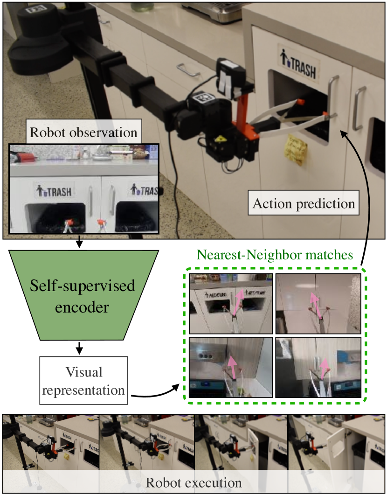
이러한 분리를 달성하는 한 가지 방법은 이미지 분류, 검출 또는 세그멘테이션과 같은 표준 대리 작업(proxy tasks)을 통해 사전 학습된 표현 모듈을 사용하는 것이다 [35]. 그러나 이는 종종 로봇 데이터와 분포가 크게 다른(out of distribution) 데이터셋에 대한 대량의 라벨링된 인간 데이터에 의존한다 [6]. 더 확장 가능한 접근 방식은 자기지도 손실(self-supervised losses)을 사용하여 시각적 인코더를 학습시키는 컴퓨터 비전의 최근 연구에서 영감을 얻는 것이다 [8, 7, 16]. 이러한 방법들은 인코더가 인간의 라벨링 없이도 세상의 유용한 특징을 학습할 수 있도록 한다. 최근 시각 기반 강화 학습(RL) 분야에서 이러한 명시적 분리를 생성하여 성능을 향상시키는 진전이 있었다 [41, 48]. 시각적 모방은 강화 학습 환경에 비해 상당한 이점을 가진다. 강화 학습에서 시각적 표현을 학습하는 것은 탐색(exploration)의 어려움과 추가로 결합되어 있으며 [47], 이는 열악한 샘플 효율성(sample complexity)으로 인해 실제 환경에서의 적용을 제한해 왔다.
본 연구에서 우리는 표현 학습과 행동 학습을 분리하는 시각적 모방을 위한 새롭고 단순한 프레임워크를 제시한다. 먼저, 오프라인 경험 데이터셋이 주어지면 고차원 시각적 관측을 저차원 표현으로 임베딩할 수 있는 시각적 인코더를 학습시킨다. 다음으로, 소량의 데모가 주어졌을 때, 새로운 관측에 대해 표현 공간에서 이와 관련된 최근접 이웃을 찾는다. 이 새로운 관측에 대한 에이전트의 행동을 결정하기 위해, 최근접 이웃들의 행동에 대한 가중 평균을 사용한다. 이 기법은 국소 가중 회귀(Locally Weighted Regression) [3]에서 영감을 얻은 것으로, 상태 추정치 대신 자기지도 시각적 표현 상에서 작동한다. 직관적으로, 이는 행동이 시각적 데모에서 학습된 전문가 혼합(Mixture-of-Experts) 모델에 대략 대응하도록 한다. 최근접 이웃은 비매개변수적(non-parametric)이므로, 이 기법은 행동 학습을 위한 추가적인 학습을 필요로 하지 않는다. 우리는 우리의 프레임워크를 최근접 이웃을 통한 시각적 모방(Visual Imitation through Nearest Neighbors, VINN)이라 부를 것이다.
우리의 실험적 분석은 VINN이 밀기(Pushing), 쌓기(Stacking), 문 열기(Door Opening)의 세 가지 조작 작업에 걸쳐 강력한 표현과 행동을 성공적으로 학습할 수 있음을 보여준다. 놀랍게도, 학습된 표현 위에서 비매개변수적 행동 학습을 수행하는 것이 종단간 행동 복제 방법들과 경쟁할 수 있음을 발견했다. 오프라인 MSE 메트릭에서 우리는 경쟁력 있는 베이스라인들과 동등한 결과를 보고하는 동시에 훨씬 더 단순하다. VINN의 실제 세계 적용 가능성을 추가로 테스트하기 위해, 71개의 시각적 데모를 사용하여 문을 여는 로봇 실험을 수행한다. 일련의 일반화 실험 전반에 걸쳐, VINN은 데모 데이터셋에 존재하는 문에 대해 80%, 새로운 장면의 문을 여는 데 대해 40%의 성공률을 달성한다. 반면, 우리의 가장 강력한 베이스라인들은 각각 53.3%와 3.3%의 성공률을 보인다.
요약하자면, 본 논문은 다음과 같은 기여를 제시한다. 첫째, 학습된 시각적 표현으로부터 비매개변수적 행동을 도출하는, 소설적이면서도 구현하기 쉬운 시각적 모방 프레임워크인 VINN을 제시한다. 둘째, VINN이 표준 매개변수적 행동 복제와 경쟁력이 있으며 일련의 조작 작업에서 이를 능가할 수 있음을 보여준다. 셋째, VINN이 실제 로봇에서 문을 여는 데 사용될 수 있으며 새로운 문에 대해 높은 일반화 성능을 달성할 수 있음을 입증한다. 마지막으로, VINN의 강건함을 입증하기 위해 다양한 표현, 학습 데이터의 양 및 기타 하이퍼파라미터에 대해 광범위하게 소거 연구(ablation) 및 분석을 수행한다.
II 관련 연구
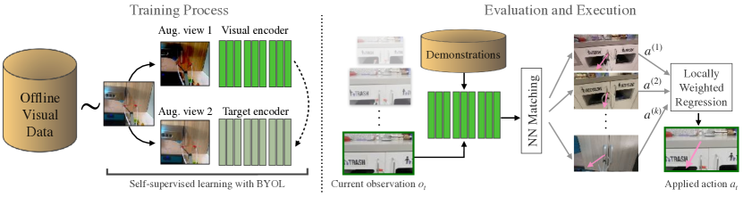
II-A 복제를 통한 모방
모방 학습은 인간의 데모로부터 기술과 행동을 학습하기 위해 자주 사용된다 [31, 27, 26, 42]. 조작(manipulation)의 맥락에서, 이러한 기법들은 밀기, 쌓기, 잡기(grasping) 등에서의 다양한 문제를 성공적으로 해결했다 [52, 54, 2, 19]. 행동 복제(Behavioral Cloning, BC) [43]는 가장 일반적인 기법 중 하나이다. 만약 에이전트의 형태(morphology)나 시점이 데모와 다르다면, 모델은 이러한 도메인 격차(domain gap)를 해결하기 위해 전이 학습(transfer learning)과 같은 기법을 포함해야 한다 [40, 36]. 이러한 의도치 않은 도메인 격차를 좁히기 위해, [52]는 원격 조작(tele-operation) 방법을 사용한 반면, [39, 49]는 보조 도구를 사용했다. 보조 도구를 사용하면 다양한 데모를 확장 가능하게 수집할 수 있다는 이점이 있다. 본 논문에서는 전문가 데모를 수집하기 위해 DemoAT [49] 프레임워크를 따른다.
II-B 시각적 표현 학습
컴퓨터 비전에서 좋은 표현을 학습하는 것에 대한 관심은 오랫동안 지속되어 왔으며, 특히 라벨링된 데이터를 수집하기 어렵거나 드문 경우에 더욱 그렇다 [7, 8, 16, 5]. 이러한 대규모 표현 학습 기법 클래스는 라벨을 명시적으로 학습할 필요 없이, 다른 모델이 일부 다운스트림 학습 작업에서 성능을 향상시키는 데 도움이 될 수 있는 특징을 추출하는 것을 목표로 한다. 이러한 작업에서는 먼저 표현을 학습하기 위해 이 라벨이 없는 데이터셋을 사용하여 하나 이상의 대리 작업(pretext tasks)에 대해 모델을 학습시킨다. 이러한 작업에는 일반적으로 인스턴스 불변성(instance invariance) 또는 일부 이미지 변형 매개변수(예: 회전 및 왜곡), 패치 또는 프레임 시퀀스 예측이 포함된다 [15, 10, 9, 28, 7, 8, 46]. 표현 학습에서 대리 작업에 대한 모델의 성능은 대개 무시된다. 대신, 이러한 모델들이 학습한 입력 도메인에서 표현으로의 매핑(mapping)에 초점을 맞춘다. 이상적으로는, 이러한 대리 작업을 해결하기 위해 사전 학습된 모델이 유용한 구조적 의미를 학습하고 이를 표현에 인코딩했을 수 있다. 따라서 직관적으로, 이러한 모델은 이용 가능한 작업 관련 데이터로부터 직접 이러한 구조적 의미를 학습하기에 데이터가 충분하지 않은 다운스트림 작업에 사용될 수 있다. [7, 8, 16, 5, 4, 12]와 같은 연구에서의 비지도 표현 학습은 작업별 데이터셋에서는 사용할 수 없는 대량의 라벨링되지 않은 데이터를 활용할 수 있기 때문에 어려운 벤치마크에서 인상적인 성능 향상을 보여주었다.
II-C 비모수적 제어 (Non-parametric Control)
비모수적 모델(Non-parametric model)은 데이터 분포에 대한 일부 매개변수를 모델링하는 대신, 이전에 관찰된 학습 데이터의 관점에서 이를 표현하고자 하는 모델이다. 비모수적 모델은 표현력이 훨씬 더 뛰어나지만, 단점으로는 일반적으로 잘 일반화하기 위해 방대한 양의 학습 예시가 필요하다는 점이 있다. 비모수적 모델의 대중적이고 간단한 예로는 국소 가중 학습(Locally Weighted Learning, LWL) [3]이 있다. LWL은 임의의 쿼리에 대한 응답이 유사한 예시들의 가중 합산이 되는 알고리즘을 지칭하는 인스턴스 기반 비모수적 학습의 일종이다. 간단한 최근접 이웃(nearest neighbor) 모델이 이러한 학습의 한 예이며, 입력 지점에 가장 가까운 이웃에 모든 가중치를 부여한다. 최근접 이웃 방법은 이전 연구들에서 제어 작업을 위해 성공적으로 사용되어 왔다 [23]. 더 정교한 -NN 알고리즘은 가장 가까운 개 지점의 합산에 기반하여 예측을 수행한다 [1].
지도 학습, 로봇 공학 및 강화 학습에서 LWL 기반 방법을 사용하는 것은 꽤 역사가 깊다. [38, 45]과 같은 연구에서는 k-최근접 이웃과 같은 LWL 알고리즘의 효과가 miniImageNet 분류와 같은 어렵고 고차원인 작업에서 경쟁력 있는 성공을 보여주었다. LWL은 저차원 상태를 얻기 위해 정확한 상태 추정기(state-estimator)가 필요하기는 하지만, 로봇 제어 문제에서도 성공을 거두었다 [3]. [22, 32, 33]에서는 비모수적 학습의 요소들이 강화 학습 알고리즘에 결합되어 사용 가능한 데이터의 양에 따라 복잡도를 조절할 수 있는 모델을 만들어낸다. 마지막으로, [37]과 같은 연구에서는 비모수적 k-최근접 이웃 회귀 기반 Q-함수가 몇 가지 이론적 가정 하에 실제 Q-함수를 잘 근사함을 보여준다. 우리의 연구인 VINN은 LWL의 단순함에서 영감을 얻었으며, 도전적인 시각적 로봇 작업에서 국소 가중 회귀(Locally Weighted Regression)를 사용하여 이 아이디어의 유용성을 입증한다.
III 접근법 (Approach)
본 섹션에서는 우리 알고리즘의 구성 요소와 이들이 어떻게 결합되어 VINN을 구성하는지 설명한다. 그림 2에서 볼 수 있듯이, VINN은 두 부분으로 구성된다: (a) 오프라인 시각 데이터에 대해 인코딩 네트워크를 학습시키는 것, 그리고 (b) 최근접 이웃 기반의 행동 예측을 위해 제공된 시연(demonstration) 데이터에 대해 쿼리를 수행하는 것이다.
III-A 시각 표상 학습 (Visual Representation Learning)
로봇의 시각적 경험으로 구성된 오프라인 데이터셋이 주어지면, 우리는 먼저 시각 표상 임베딩 함수를 학습한다. 본 연구에서는 시각 표상을 학습하기 위해 두 가지 핵심 통찰을 사용한다. 첫째, 기존의 크지만 관련 없는 실제 세계 데이터셋을 사용하여 좋은 시각 사전 정보(vision prior)를 학습할 수 있으며, 둘째, 작지만 당면한 작업과 관련이 있는 시연 데이터셋을 사용하여 해당 사전 정보로부터 미세 조정(fine-tuning)을 수행할 수 있다는 점이다.
첫 번째 통찰을 위해, 가능한 경우 항상 ImageNet으로 사전 학습된 모델에서 모델을 초기화한다. 이러한 모델은 우리가 사용하는 PyTorch [30] 라이브러리에서 제공되며, 모델 초기화 함수 호출에 단일 매개변수를 추가하는 것만으로 간단히 구현할 수 있다.
그 다음, 자기지도 학습(self-supervised learning)을 사용하여 오프라인 학습 데이터셋의 모든 프레임에 대해 이 시각 인코더를 학습시킨다. 본 연구에서는 자기지도 학습 목표로 BYOL(Bootstrap Your Own Latent) [16]을 사용한다. 그림 2에 나타난 바와 같이, BYOL은 동일한 인코더 네트워크의 두 가지 버전을 사용한다. 하나는 정상적으로 업데이트되는 온라인 네트워크이고, 다른 하나는 타깃 네트워크라 불리는 온라인 네트워크의 느린 이동 평균(moving average)이다. BYOL 자기지도 손실 함수는 동일한 이미지의 서로 다르게 증강된 버전이 입력되었을 때 네트워크의 두 헤드(head) 간의 차이를 줄이도록 작동한다. 본 연구에서는 BYOL을 사용하지만, VINN은 다른 자기지도 표상 학습 방법 [7, 8, 5, 4]과도 함께 작동할 수 있다 (표 III).
실제 구현에서는 BYOL 온라인 네트워크와 타깃 네트워크 모두를 ImageNet 사전 학습 인코더로 초기화한다. 그 후, BYOL 목적 함수를 사용하여 우리의 이미지 분포에 더 잘 맞도록 미세 조정을 진행한다. 자기지도 학습이 완료되면, 학습 시연 프레임 전체를 인코더로 인코딩하여 임베딩 세트 을 얻는다.
III-B -최근접 이웃 기반 국소 가중 회귀 (Locally Weighted Regression)
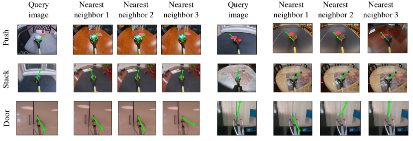
우리의 인코더가 제공하는 임베딩 세트 은 시연 이미지의 압축된 표상을 담고 있다. 따라서 테스트 시에 입력이 주어지면 유사한 특징을 가진 시연 프레임을 검색한다. 시연 임베딩 세트 에서 인코딩된 입력 의 최근접 이웃을 찾는다. 그림 3에서 이러한 최근접 이웃들이 쿼리 이미지와 시각적으로 유사함을 볼 수 있다. 우리 알고리즘은 유사한 관측은 유사한 행동을 유발해야 한다는 가정을 내포하고 있다. 따라서 쿼리의 개 최근접 이웃을 찾으면, 다음 행동을 해당 개 최근접 이웃과 관련된 행동들의 가중 평균으로 설정한다.
구체적으로, 이는 임베딩 간의 거리에 기반하여 최근접 이웃 검색을 수행함으로써 이루어진다: , 여기서 은 번째 최근접 이웃이다. 개의 최근접 이웃과 이와 관련된 행동인 를 찾으면, 행동을 해당 예시들의 관련 행동에 대한 유클리드 커널 가중 평균 [3]으로 설정한다:
실제로는, 이는 임베딩 공간에서 쿼리 이미지와의 거리에 대한 SoftMin으로 가중치를 부여한 관측 관련 행동들의 평균이 된다.
III-C 실제 로봇 문 열기 작업에의 적용
로봇 문 열기 작업을 위해, 우리는 DemoAT [49] 도구를 사용하여 시연 데이터를 수집한다. 여기서는 리처-그래버(reacher-grabber)에 GoPro 카메라를 장착하여 각 궤적의 비디오를 수집한다. 일련의 프레임들을 SfM(structure from motion) 방법에 통과시켜 고정된 프레임에서의 카메라 위치를 출력한다 [29]. 좌표와 방향으로 구성된 카메라 포즈 시퀀스로부터 행동이 되는 병진 운동(translational motion)을 추출한다. 그리퍼 상태를 추출하기 위해, 그리핑의 다양한 단계를 나타내는 4가지 클래스(열림, 거의 열림, 거의 닫힘, 닫힘)에 대한 분포를 출력하는 그리퍼 네트워크를 학습시킨다. 그 후, 이러한 이미지들과 이에 대응하는 행동들을 우리의 모방 학습 방법에 입력한다.
시각 인코더를 학습시키기 위해, 행동 정보 없이 시연 데이터셋의 개별 프레임에 대해 ImageNet 사전 학습된 BYOL 인코더를 학습시킨다. 행동 정보가 포함된 동일한 데이터셋은 -NN 기반 행동 예측을 위한 시연 데이터셋 역할을 한다. 표상 학습을 위해 작업 특정 시연 데이터를 사용하지만, 우리의 프레임워크는 오프라인 데이터셋 [17, 14]이나 작업 무관 플레이 데이터 [50]와 같은 다른 형태의 라벨 없는 데이터를 사용하는 것과도 호환된다.
로봇에서 문 열기 기술을 실행하기 위해, 우리는 모델을 폐루프(closed-loop) 방식으로 실행한다. 로봇과 환경을 초기화한 후, 매 단계마다 로봇의 관측치를 획득하고 이를 통해 모델에 쿼리를 보낸다. 모델은 병진 동작 과 그리퍼 상태 을 반환하며, 로봇은 로 이동한다. 여기서 벡터 은 SfM 모델의 부정확성을 완화하고 인간 시연에서 로봇 실행으로의 전이를 개선하기 위한 각 원소 를 가진 하이퍼파라미터이다. 또한, 최근접 이웃 기반 방법의 경우, 플로팅 값 를 그리퍼 상태로 매핑하는 하이퍼파라미터를 사용하며, 이는 실험별로 튜닝되었다.
IV Experimental Evaluation
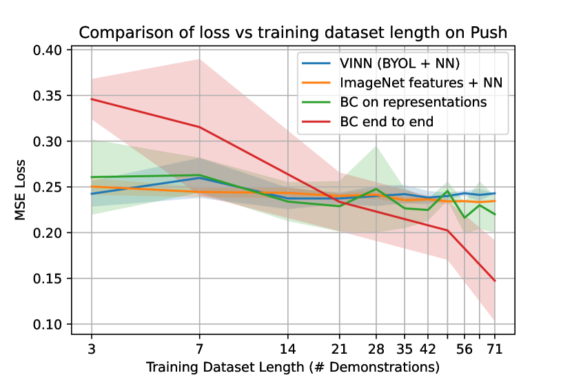
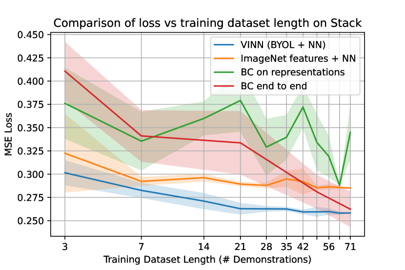
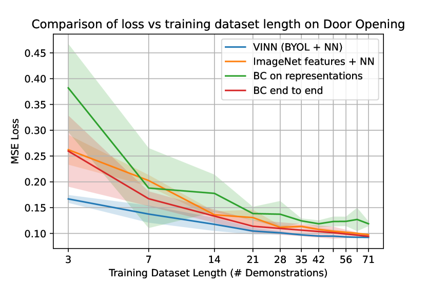
이전 섹션에서 우리는 시각적 모방을 위한 프레임워크인 VINN을 설명했다. 본 섹션에서는 우리의 핵심 질문인 'VINN이 인간의 시연을 얼마나 잘 모방하는가?'에 답하고자 한다. 이 질문에 답하기 위해, 오프라인 데이터셋과 폐루프 실제 로봇 평가 환경 모두에서 평가를 진행할 것이다. 추가적으로, 모방 알고리즘이 흔히 어려움을 겪는 환경에서 VINN의 소량 시연을 통한 일반화(generalization with few demonstrations) 능력을 탐구할 것이다.
IV-A Experimental Setup
우리는 두 가지 다른 실험 세트를 수행한다. 첫 번째는 밀기, 쌓기, 문 열기에 대한 오프라인 데이터셋 실험이고, 두 번째는 실제 로봇의 문 열기 실험이다.
오프라인 시각 모방 데이터셋
밀기 및 쌓기 작업의 데이터는 [49]에서 가져온 것이다. 밀기 작업의 목표는 표면 위의 물체를 미끄러뜨려 빨간색 원 안으로 이동시키는 것이다. 쌓기 작업의 목표는 장면에 존재하는 물체를 잡아서 장면에 있는 다른 물체 위로 이동시킨 후 놓는 것이다. 혼동을 피하기 위해, 쌓기 작업을 위한 전문가 시연에서는 항상 가장 가까운 물체가 먼 물체 위에 놓이도록 한다. 동작 레이블은 말단 장치(end-effector)의 움직임이며, 이 경우 현재 프레임과 다음 프레임 사이의 병진 벡터이다. 각 사례에는 장면과 작업을 구성하는 다양한 배경과 물체가 존재하여 작업을 어렵게 만든다.
문 열기 작업의 경우, 3명의 데이터 수집자가 각자의 주방에서 데이터를 수집했다. 이는 학습용 시연 총 71개, 테스트용 시연 21개에 달한다. 우리는 SfM으로 인한 스케일 모호성을 고려하여 데이터셋의 모든 동작을 정규화한다. 세 가지 작업 모두에 대해, 우리는 실제값(ground truth) 동작과 각 방법이 예측한 동작 사이의 MSE 손실을 계산한다. 이 문 열기 작업을 위해 수집된 시연의 수는 각각 약 750개 및 930개의 시연을 포함하는 쌓기 및 밀기 작업에 사용된 수보다 한 자릿수 더 적다는 점에 유의해야 한다. 데이터가 적은 환경에서 다양한 모델의 성능을 파악하기 위해, 우리는 학습용 71개, 테스트용 21개의 시연을 포함하는 하위 샘플링된 밀기 및 쌓기 데이터셋을 생성한다. 이 하위 샘플링을 통해 세 가지 데이터셋의 크기가 동일해진다.
폐루프 제어
IV-B Baselines
우리는 베이스라인 비교를 위해 다음 방법들을 사용하여 실험을 진행한다.
-
•
무작위 동작 (Random Action): 이 베이스라인에서는 동작 공간(action space)에서 무작위 동작을 샘플링한다.
-
•
개루프 (Open Loop): 주어진 모든 시연에서 최대 우도(maximum-likelihood) 개루프 정책을 찾는다. 이는 타임스텝 에서 데이터셋에 나타난 모든 동작 의 평균 동작 이다. 베이지안 관점에서 표준 행동 복제가 을 근사하려는 것이라면, 이 모델은 를 근사하려는 것이다.
- •
- •
-
•
암묵적 행동 복제 (Implicit Behavioral Cloning): 공식 코드를 수정하여 해당 작업들에 대해 Implicit BC [13] 모델을 학습시킨다.
-
•
ImageNet features + NN: 자기지도학습 대신, 여기서는 [6]과 유사하게 사전 학습된 ImageNet 인코더에 의해 생성된 이미지 표현을 사용한다. 이 베이스라인과 제안하는 방법의 차이는 단순히 우리 데이터셋에 대한 미세조정(finetuning) 단계를 생략하는 것이다. 이 베이스라인은 도메인 관련 데이터셋에 대한 자기지도 사전 학습의 중요성을 강조한다.
- •
IV-C Training Details
본 논문에서 사용된 각 인코더 네트워크는 마지막 선형 레이어가 제거된 ResNet-50 아키텍처 [18]를 따른다. 별도로 명시하지 않는 한, ResNet-50 인코더의 가중치는 항상 ImageNet 데이터셋으로 사전 학습된 모델로 초기화한다. VINN의 경우, BYOL [16] 손실을 사용하여 자기지도 인코딩을 학습시킨다. 표준 엔드투엔드 행동 복제(BC)의 경우, 마지막 선형 레이어를 3층 MLP로 교체하고 MSE 손실로 학습시킨다. BC-rep의 경우, 인코딩 네트워크를 우리 데이터셋에서 BYOL로 학습된 가중치로 동결하고 마지막 레이어만 MSE 손실로 학습시킨다. 추가적으로, 모든 시각적 학습에는 무작위 자르기(random crop), 무작위 색상 왜곡(random color jitter), 무작위 그레이스케일 증강 및 무작위 블러링을 사용한다. 세 가지 데이터셋 모두에서 자기지도 미세조정 방법을 100 에포크(epoch) 동안 학습시켰다.
IV-D How does VINN Perform on Offline Datasets?
첫 번째 평가로, 그림 4의 밀기(Pushing), 쌓기(Stacking), 문 열기(Door-Opening) 작업에 대해 평균제곱오차(MSE) 손실을 기준으로 제안하는 방법과 베이스라인들을 비교한다. 학습 데이터셋 크기가 알고리즘에 미치는 영향을 이해하기 위해, 각 데이터셋에서 다양한 크기의 여러 서브샘플로 모델을 학습시킨다. 사전 학습된 ImageNet 표현에서 시작하는 엔드투엔드 행동 복제(BC)는 학습 데모의 양이 많을 때 더 나을 수 있지만, 데이터가 적은 환경에서는 최근접 이웃(Nearest Neighbor) 방법이 경쟁력이 있거나 더 우수한 성능을 보임을 확인할 수 있다.
쌓기 및 문 열기 작업에서 VINN은 학습 데모의 수가 적을 때() 유의미하게 더 우수하다. 반면 밀기 작업에서는 데모의 수가 적을 때 작업을 해결하기가 너무 어려울 수 있음을 확인했다. 이에 대한 한 가지 이유는 BYOL이 이 작업에 가장 관련성 높은 표현을 추출하지 못했을 수 있기 때문이다. 표 III의 추가 실험은 VICReg와 같은 다른 형태의 자기지도학습을 사용하면 이 작업에서의 성능을 크게 향상시킬 수 있음을 보여준다. 전반적으로, 이러한 실험들은 좋은 표현이 주어지면 최근접 이웃 기법이 엔드투엔드 행동 복제에 대한 경쟁력 있는 대안을 제공할 수 있다는 우리의 가설을 뒷받침한다.
IV-E How does VINN Perform on Robotic Evaluation?
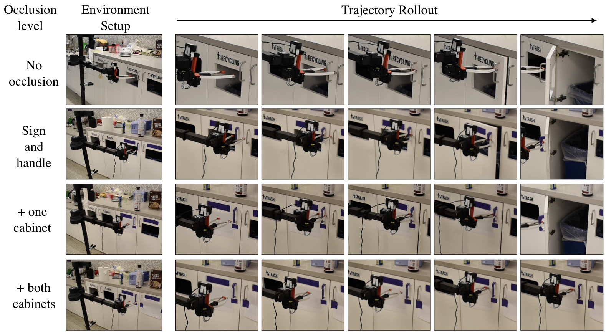
다음으로, 실제 로봇 환경에서 VINN과 베이스라인들을 실행한다. 이 설정에서 테스트 환경은 시각적 수정 없이 제시된, 학습 데모가 수집된 것과 동일한 세 개의 수납장으로 구성된다. 각 모델에 대해 실제 환경에서 세 개의 서로 다른 수납장을 사용하여 로봇으로 30회의 롤아웃을 실행한다. 각 롤아웃에서 로봇의 시작 위치는 (Sec. IV-A)에 상세히 설명된 대로 무작위화된다. 표 I에서는 각 모델의 30회 롤아웃 중 성공 비율을 보여주며, 로봇이 손잡이를 성공적으로 잡은 횟수와 문을 완전히 연 횟수를 모두 기록한다.
| Method | Handle grasped | Door opened |
|---|---|---|
| BC (end to end) | 0% | 0% |
| BC on representations | 56.7% | 53.3% |
| Imagenet features + NN | 20% | 0% |
| VINN (BYOL + NN) | 80% | 80% |
표 I에서 볼 수 있듯이, 테스트 환경과 학습 환경 간의 차이가 최소화될 때 VINN은 수납장 문을 성공적으로 여는 데 있어 모든 BC 변형보다 더 나은 성능을 보인다. 주목할 점은, 증강된 데이터에 대한 자기지도 특징에 의존하는 것이 모델을 훨씬 더 강인하게 만든다는 것이다. 엔드투엔드 매개변수 모델인 BC는 로봇이 잘못된 움직임을 보여 시각적 관측이 분포 외(out-of-distribution) [34]로 빠르게 벗어날 경우 행동에 대한 강력한 사전 확률(prior)을 가지지 못한다. 반면, VINN은 최근접 이웃 사전 확률을 사용하여 어느 정도의 편차까지는 복구할 수 있는데, 이는 평행 이동 행동이 일반적으로 로봇을 분포 밖으로 더 밀어내는 대신 다시 중앙으로 맞추는 경향이 있기 때문이다.
IV-F To What Extent does VINN Generalize to Novel Scenes?
실제 세계의 새로운 장면에 대한 로봇 알고리즘의 일반화 성능을 테스트하기 위해, 테스트 수납장 중 하나를 다양한 수준의 가림으로 수정했다. 그림 5에서 각 환경의 샘플 롤아웃 프레임을 보여주며, 수납장의 수정 사항도 함께 보여준다.
| Modification | BC-rep | VINN (ours) |
|---|---|---|
| Baseline (no modifications) | 90% | 80% |
| Covered signs and handle | 10% | 70% |
| Covered signs, handle, and one bin | 0% | 50% |
| Covered signs, handle, and both bins | 0% | 0% |
표 II에서 VINN은 수납장의 모든 시각적 영역이 가려졌을 때만 완전히 실패함을 알 수 있다. 일관된 시각적 마커가 없으면 인코더가 정보를 전달하지 못하고, 따라서 k-NN 부분도 실패하므로 이러한 실패는 예상된 것이다. 그럼에도 불구하고, 수납장에 상당한 수정이 가해진 상황에서도 VINN은 더 높은 비율로 성공하는 반면, BC-rep은 완전히 실패함을 볼 수 있다.
모든 실제 로봇 실험을 통해 다음과 같은 현상을 발견했다. 좋은 MSE 손실이 실제 세계에서의 좋은 성능을 보장하기에는 충분하지 않지만, 두 수치는 여전히 상관관계가 있으며, 실제 세계에서 좋은 성능을 내기 위해서는 낮은 MSE 손실이 필수적인 것으로 보인다. 이러한 관찰을 통해 우리는 시간과 비용이 많이 소요될 수 있는 실제 로봇 배포 및 테스트 전에 오프라인에서 가설을 테스트할 수 있다. 우리는 MSE 메트릭에서의 성능(표 III)과 실제 세계 성능(표 I, II) 사이의 이러한 격차가, 이전 오류를 수정해야 할 수 있는 학습 다양체(manifold)를 벗어난 상황에서 잘 수행하는 각 모델의 능력 차이에서 비롯된다고 가설을 세운다.
| No Pretraining | With ImageNet Pretraining | ||||||||||||||||||||||
|---|---|---|---|---|---|---|---|---|---|---|---|---|---|---|---|---|---|---|---|---|---|---|---|
| Tasks | Random |
|
|
|
BC-Rep |
|
|
|
|
||||||||||||||
| Door Opening | |||||||||||||||||||||||
| Stacking | |||||||||||||||||||||||
| Pushing | |||||||||||||||||||||||
IV-G 성공을 위해 VINN에서 내린 디자인 선택들은 얼마나 중요한가?
VINN은 시각 인코더(visual encoder)와 최근접 이웃(nearest-neighbor) 기반 행동 모듈이라는 두 가지 주요 구성 요소로 이루어져 있다. 본 섹션에서는 이들 각각에 대해 우리가 내린 몇 가지 주요 디자인 선택들을 살펴본다.
적절한 자기지도 학습 선택하기
우리의 알고리즘에서는 BYOL 기반의 자기지도 인코딩을 사용하지만, SimCLR 및 VICReg [7, 4]과 같은 다양한 다른 자기지도 학습 방법들도 존재한다. 소규모 실험 세트에서 우리는 SimCLR [7] 및 VICReg [4]과 비교하여 유사한 MSE 손실을 관찰했다. 표 III을 보면 BYOL이 문 열기(Door-Opening)와 쌓기(Stacking)에서 가장 우수한 성능을 보이는 반면, VICReg은 밀기(Pushing)에서 더 나은 성능을 보인다. 그러나 전반적으로 튜닝이 덜 필요하다는 점 때문에 우리는 로봇 실험을 위해 BYOL을 선택했다.
사전 학습 및 미세 조정의 절제 실험
우리 알고리즘의 또 다른 큰 성능 향상은 시각 인코더를 ImageNet으로 학습된 네트워크로 초기화함으로써 달성된다. 표 III에서는 VINN의 이러한 구성 요소를 제거(ablation)하여 얻은 모델들의 MSE 손실도 보여준다. 이 구성 요소를 제거하면 BYOL + NN (No Pretraining) 열이 되며, 이는 VINN보다 훨씬 저조한 성능을 보인다. 마찬가지로, VINN의 성공은 우리 데이터셋에 대한 자기지도 미세 조정(self-supervised fine-tuning)에 의존하며, 이를 제거하면 표 III의 ImageNet + NN 열에 표시된 모델이 된다. 이 모델은 MSE 지표에서 VINN보다 아주 약간만 더 나쁜 성능을 보인다. 그러나 표 I에서 볼 수 있듯이, 이 모델은 실제 환경(real world)에서 저조한 성능을 보인다. 이러한 절제 실험들은 우리의 국소 가중 회귀(locally weighted regression) 기반 정책의 성능이 표현(representation)의 품질에 의존함을 보여준다. 즉, 좋은 표현은 더 나은 최근접 이웃으로 이어지고, 이는 결과적으로 오프라인과 온라인 모두에서 더 나은 정책으로 이어진다.
명시적 모방 대신 암묵적 모방 수행
모델이 행동을 직접 예측하려고 하는 명시적 형태의 모방에서 벗어나, 우리는 암묵적 행동 복제(Implicit Behavioral Cloning, IBC) [13]를 사용하여 베이스라인을 실행한다. 표 III에서 볼 수 있듯이, 이 베이스라인은 무작위(random) 또는 개루프(open loop) 베이스라인보다 유의미하게 더 나은 행동을 학습하는 데 실패한다. 우리는 이것이 두 가지 이유 때문이라고 생각한다. 첫째, 암묵적 모델은 전체 공간(행동 공간 관측 공간)에 대한 에너지를 모델링해야 하므로, 우리 데이터셋에 있는 소수의 시연(demonstration)보다 더 많은 데이터를 필요로 한다. 둘째, IBC의 공식 구현은 정규화된 3차원 벡터의 훨씬 더 작은 부분 공간 대신 을 행동 공간으로 지원한다. IBC가 행동을 모델링하려고 시도한 이 훨씬 더 큰 행동 공간이 IBC의 성능을 저하시켰을 수 있다. VINN은 유효한 행동들의 국소 가중 평균 역시 유효한 행동을 생성한다는 암묵적인 가정을 하지만, 추가적인 처리 없이 모든 관련 공간으로 자유롭게 투영될 수 있어 더 유연하다.
표현 상에서 매개변수적 정책 학습하기
우리의 모든 실험(Sec. IV)에서 표현 상의 행동 복제(BC-Rep) 베이스라인은 학습된 표현을 사용하여 매개변수적 행동 정책을 학습하는 베이스라인의 성능을 보여준다. MSE 손실(표 III) 및 실제 환경 실험(표 I, II)에서, 이는 VINN과 가장 유사한 성능을 달성하는 베이스라인이다. 그러나 학습 도메인과 테스트 도메인 간의 격차 또는 정책의 시간 지평(horizon)이 커질수록 BC-Rep과 VINN 간의 차이는 더 두드러진다. 이러한 실험 결과는 비매개변수적(non-parametric) 정책을 사용하는 것이 분포 외(out-of-distribution) 샘플에 대해 강인함을 가질 수 있게 해준다는 것을 시사한다.
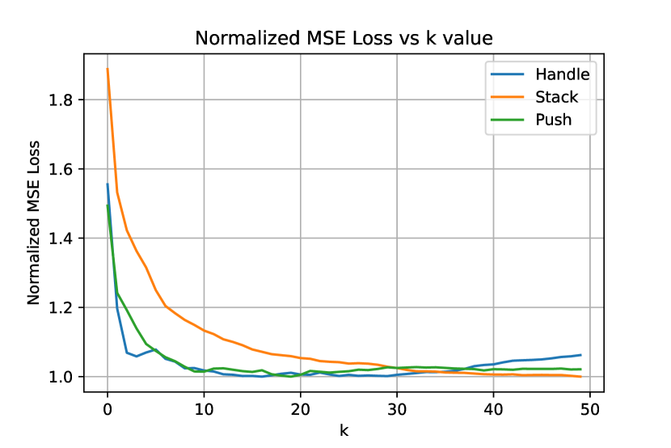
-최근접 이웃을 위한 적절한 선택하기
마지막으로, VINN에서 우리는 -NN 기반 국소 가중 제어기(locally weighted controller)에 대한 다양한 값의 영향을 연구한다. 이 매개변수는 중요한데, 가 너무 작으면 예측된 행동이 부드럽지 않게 될 수 있기 때문이다. 반면에 이 너무 크면 무관한 예시들이 예측된 행동에 영향을 미치기 시작할 수 있다. 그림 6에서 검증 세트의 정규화된 MSE 손실을 값에 대해 플롯팅함으로써, 우리는 부근에서 단 몇 개의 행동만 평균화하면서도 낮은 검증 손실을 달성하는 데 이 이상적임을 발견했다. 을 넘어서는, 를 증가시키는 것이 모델에 유의미한 개선을 주지 못함을 확인했다.
IV-H 연산량 고려사항
실험에 사용한 데이터셋이 크지는 않았지만, 나이브한 알고리즘을 사용할 경우 현재의 최근접 이웃 구현이 학습 데이터셋의 크기에 선형적으로 의존하는 알고리즘이라는 점을 인지하고 있다. 그러나 우리는 VINN이 실용적이라고 믿는데, 첫째로 이 알고리즘은 이 매우 작은 소규모 시연 데이터셋 영역을 위해 주로 설계되었기 때문이며, 둘째로 이러한 탐색은 10억 개의 예시 규모에서도 최근접 이웃 탐색을 수행하도록 최적화된 FAISS [20]와 같은 오픈소스 라이브러리를 사용하여 나이브한 방법을 넘어 컴파일된 인덱스를 통해 가속화될 수 있기 때문이다 [25]. 현재 우리 알고리즘은 이미지를 인코딩하는 데 초, 최근접 이웃 회귀를 수행하는 데 초가 소요되며, 이는 우리가 고려하는 로봇 공학 작업에서 아주 작은 속도 손실에 불과하다.
V 한계점 및 향후 연구
본 연구에서는 시각 표현 학습과 행동 학습을 분리하는 새로운 시각 모방 프레임워크인 VINN을 제안했다. 이러한 분리가 기존의 표준 시각 모방 방법들보다 성능을 향상시키지만, 향후 연구를 위한 몇 가지 방향이 존재한다. 첫째, Sec. IV-F에서 볼 수 있듯이 새로운 장면으로 일반화하는 데 여전히 장애물이 남아 있으며, 장면에서 크고 식별 가능한 마커가 모두 제거되면 우리 모델은 실패한다. 우리의 NN 기반 행동 추정 덕분에 새로운 시연을 쉽게 추가할 수 있지만, 장면의 이처럼 급격한 변화에 표현을 쉽게 적응시키기는 어렵다. 점진적 표현 학습(incremental representation learning) 알고리즘은 이를 개선할 수 있는 큰 잠재력을 가지고 있다. 둘째, 현재 우리의 자기지도 학습은 작업 관련 데이터에서 수행되지만, 이상적으로 데이터셋이 충분히 광범위하다면 작업 무관 사전 학습(task agnostic pre-training) 역시 좋은 성능을 제공해야 한다 [50]. 마지막으로, 우리의 프레임워크는 단일 작업 환경에 초점을 맞추고 있지만, 여러 작업에 대한 공동 표현(joint representation)을 학습하면 동일한 정확도를 유지하면서도 전반적인 학습 오버헤드를 줄일 수 있을 것이라 믿는다.
감사의 말
코드 작성 및 소거 실험(ablation experiments) 실행을 도와준 Rohith Mukku에게 감사를 표한다. 본 논문의 초기 버전에 대해 피드백을 제공해 준 Dhiraj Gandhi, Pete Florence, Soumith Chintala에게 감사를 표한다. 본 연구는 Honda, Amazon의 지원금 및 ONR 지원 번호 N00014-21-1-2404, N00014-21-1-2758의 지원을 받아 수행되었다.
References
- Aha and Salzberg [1994] David W. Aha and Steven L. Salzberg. Learning to catch: Applying nearest neighbor algorithms to dynamic control tasks. In P. Cheeseman and R. W. Oldford, editors, Selecting Models from Data, pages 321–328, New York, NY, 1994. Springer New York. ISBN 978-1-4612-2660-4.
- Argall et al. [2009] Brenna D Argall, Sonia Chernova, Manuela Veloso, and Brett Browning. A survey of robot learning from demonstration. Robotics and autonomous systems, 57(5):469–483, 2009.
- Atkeson et al. [1997] Christopher G Atkeson, Andrew W Moore, and Stefan Schaal. Locally weighted learning. Lazy learning, pages 11–73, 1997.
- Bardes et al. [2021] Adrien Bardes, Jean Ponce, and Yann LeCun. Vicreg: Variance-invariance-covariance regularization for self-supervised learning. arXiv preprint arXiv:2105.04906, 2021.
- Caron et al. [2020] Mathilde Caron, Ishan Misra, Julien Mairal, Priya Goyal, Piotr Bojanowski, and Armand Joulin. Unsupervised learning of visual features by contrasting cluster assignments. arXiv preprint arXiv:2006.09882, 2020.
- Chen et al. [2020a] Bryan Chen, Alexander Sax, Gene Lewis, Iro Armeni, Silvio Savarese, Amir Zamir, Jitendra Malik, and Lerrel Pinto. Robust policies via mid-level visual representations: An experimental study in manipulation and navigation. arXiv preprint arXiv:2011.06698, 2020a.
- Chen et al. [2020b] Ting Chen, Simon Kornblith, Kevin Swersky, Mohammad Norouzi, and Geoffrey Hinton. Big self-supervised models are strong semi-supervised learners. arXiv preprint arXiv:2006.10029, 2020b.
- Chen et al. [2020c] Xinlei Chen, Haoqi Fan, Ross Girshick, and Kaiming He. Improved baselines with momentum contrastive learning. arXiv preprint arXiv:2003.04297, 2020c.
- Doersch et al. [2016] Carl Doersch, Abhinav Gupta, and Alexei A. Efros. Unsupervised visual representation learning by context prediction, 2016.
- Dosovitskiy et al. [2015] Alexey Dosovitskiy, Philipp Fischer, Jost Tobias Springenberg, Martin Riedmiller, and Thomas Brox. Discriminative unsupervised feature learning with exemplar convolutional neural networks, 2015.
- Duan et al. [2017] Yan Duan, Marcin Andrychowicz, Bradly Stadie, OpenAI Jonathan Ho, Jonas Schneider, Ilya Sutskever, Pieter Abbeel, and Wojciech Zaremba. One-shot imitation learning. In Advances in neural information processing systems, pages 1087–1098, 2017.
- Dwibedi et al. [2021] Debidatta Dwibedi, Yusuf Aytar, Jonathan Tompson, Pierre Sermanet, and Andrew Zisserman. With a little help from my friends: Nearest-neighbor contrastive learning of visual representations. arXiv preprint arXiv:2104.14548, 2021.
- Florence et al. [2021] Pete Florence, Corey Lynch, Andy Zeng, Oscar Ramirez, Ayzaan Wahid, Laura Downs, Adrian Wong, Johnny Lee, Igor Mordatch, and Jonathan Tompson. Implicit behavioral cloning. arXiv preprint arXiv:2109.00137, 2021.
- Fu et al. [2020] Justin Fu, Aviral Kumar, Ofir Nachum, George Tucker, and Sergey Levine. D4rl: Datasets for deep data-driven reinforcement learning. arXiv preprint arXiv:2004.07219, 2020.
- Gidaris et al. [2018] Spyros Gidaris, Praveer Singh, and Nikos Komodakis. Unsupervised representation learning by predicting image rotations, 2018.
- Grill et al. [2020] Jean-Bastien Grill, Florian Strub, Florent Altché, Corentin Tallec, Pierre H Richemond, Elena Buchatskaya, Carl Doersch, Bernardo Avila Pires, Zhaohan Daniel Guo, Mohammad Gheshlaghi Azar, et al. Bootstrap your own latent: A new approach to self-supervised learning. arXiv preprint arXiv:2006.07733, 2020.
- Gulcehre et al. [2020] Caglar Gulcehre, Ziyu Wang, Alexander Novikov, Tom Le Paine, Sergio Gomez Colmenarejo, Konrad Zolna, Rishabh Agarwal, Josh Merel, Daniel Mankowitz, Cosmin Paduraru, et al. Rl unplugged: Benchmarks for offline reinforcement learning. arXiv e-prints, pages arXiv–2006, 2020.
- He et al. [2015] Kaiming He, Xiangyu Zhang, Shaoqing Ren, and Jian Sun. Deep residual learning for image recognition, 2015.
- Hussein et al. [2017] Ahmed Hussein, Mohamed Medhat Gaber, Eyad Elyan, and Chrisina Jayne. Imitation learning: A survey of learning methods. ACM Computing Surveys (CSUR), 50(2):1–35, 2017.
- Johnson et al. [2017] Jeff Johnson, Matthijs Douze, and Hervé Jégou. Billion-scale similarity search with gpus. arXiv preprint arXiv:1702.08734, 2017.
- Kemp et al. [2021] Charles C Kemp, Aaron Edsinger, Henry M Clever, and Blaine Matulevich. The design of stretch: A compact, lightweight mobile manipulator for indoor human environments. arXiv preprint arXiv:2109.10892, 2021.
- Lee and Anderson [2016] Minwoo Lee and Charles W Anderson. Robust reinforcement learning with relevance vector machines. Robot Learning and Planning (RLP 2016), page 5, 2016.
- Mansimov and Cho [2018] Elman Mansimov and Kyunghyun Cho. Simple nearest neighbor policy method for continuous control tasks, 2018. URL https://openreview.net/forum?id=ByL48G-AW.
- Manuelli et al. [2020] Lucas Manuelli, Yunzhu Li, Pete Florence, and Russ Tedrake. Keypoints into the future: Self-supervised correspondence in model-based reinforcement learning. arXiv preprint arXiv:2009.05085, 2020.
- Matsui et al. [2018] Yusuke Matsui, Yusuke Uchida, Hervé Jégou, and Shin’ichi Satoh. A survey of product quantization. ITE Transactions on Media Technology and Applications, 6(1):2–10, 2018.
- Meltzoff and Moore [1983] Andrew N Meltzoff and Keith Moore. Newborn infants imitate adult facial gestures. Child development, 1983.
- Meltzoff and Moore [1977] Andrew N Meltzoff and M Keith Moore. Imitation of facial and manual gestures by human neonates. Science, 1977.
- Misra et al. [2016] Ishan Misra, C. Lawrence Zitnick, and Martial Hebert. Shuffle and learn: Unsupervised learning using temporal order verification, 2016.
- Ozyesil et al. [2017] Onur Ozyesil, Vladislav Voroninski, Ronen Basri, and Amit Singer. A survey of structure from motion, 2017.
- Paszke et al. [2019] Adam Paszke, Sam Gross, Francisco Massa, Adam Lerer, James Bradbury, Gregory Chanan, Trevor Killeen, Zeming Lin, Natalia Gimelshein, Luca Antiga, et al. Pytorch: An imperative style, high-performance deep learning library. Advances in neural information processing systems, 32:8026–8037, 2019.
- Piaget [2013] Jean Piaget. Play, dreams and imitation in childhood, volume 25. Routledge, 2013.
- Pritzel et al. [2017] Alexander Pritzel, Benigno Uria, Sriram Srinivasan, Adrià Puigdomènech, Oriol Vinyals, Demis Hassabis, Daan Wierstra, and Charles Blundell. Neural episodic control, 2017.
- Rajeswaran et al. [2018] Aravind Rajeswaran, Kendall Lowrey, Emanuel Todorov, and Sham Kakade. Towards generalization and simplicity in continuous control, 2018.
- Ross et al. [2010] Stephane Ross, Geoffrey Gordan, and Andrew Bagnell. A reduction of imitation learning and structured prediction to no-regret online learning. In arXiv preprint arXiv:1011.0686, 2010.
- Sax et al. [2019] Alexander Sax, Jeffrey O Zhang, Bradley Emi, Amir Zamir, Silvio Savarese, Leonidas Guibas, and Jitendra Malik. Learning to navigate using mid-level visual priors. arXiv preprint arXiv:1912.11121, 2019.
- Sermanet et al. [2016] Pierre Sermanet, Kelvin Xu, and Sergey Levine. Unsupervised perceptual rewards for imitation learning. arXiv preprint arXiv:1612.06699, 2016.
- Shah and Xie [2018] Devavrat Shah and Qiaomin Xie. Q-learning with nearest neighbors, 2018.
- Snell et al. [2017] Jake Snell, Kevin Swersky, and Richard S. Zemel. Prototypical networks for few-shot learning, 2017.
- Song et al. [2020] Shuran Song, Andy Zeng, Johnny Lee, and Thomas Funkhouser. Grasping in the wild: Learning 6dof closed-loop grasping from low-cost demonstrations. IEEE Robotics and Automation Letters, 5(3):4978–4985, 2020.
- Stadie et al. [2017] Bradly C Stadie, Pieter Abbeel, and Ilya Sutskever. Third-person imitation learning. ICLR, 2017.
- Stooke et al. [2021] Adam Stooke, Kimin Lee, Pieter Abbeel, and Michael Laskin. Decoupling representation learning from reinforcement learning. In International Conference on Machine Learning, pages 9870–9879. PMLR, 2021.
- Tomasello et al. [1993] Michael Tomasello, Sue Savage-Rumbaugh, and Ann Cale Kruger. Imitative learning of actions on objects by children, chimpanzees, and enculturated chimpanzees. Child development, 64(6):1688–1705, 1993.
- Torabi et al. [2018] Faraz Torabi, Garrett Warnell, and Peter Stone. Behavioral cloning from observation. arXiv preprint arXiv:1805.01954, 2018.
- Urakami et al. [2019] Yusuke Urakami, Alec Hodgkinson, Casey Carlin, Randall Leu, Luca Rigazio, and Pieter Abbeel. Doorgym: A scalable door opening environment and baseline agent. CoRR, abs/1908.01887, 2019. URL http://arxiv.org/abs/1908.01887.
- Wang et al. [2019] Yan Wang, Wei-Lun Chao, Kilian Q. Weinberger, and Laurens van der Maaten. Simpleshot: Revisiting nearest-neighbor classification for few-shot learning, 2019.
- Wu et al. [2018] Zhirong Wu, Yuanjun Xiong, Stella Yu, and Dahua Lin. Unsupervised feature learning via non-parametric instance-level discrimination, 2018.
- Yarats et al. [2021a] Denis Yarats, Rob Fergus, Alessandro Lazaric, and Lerrel Pinto. Mastering visual continuous control: Improved data-augmented reinforcement learning. arXiv preprint arXiv:2107.09645, 2021a.
- Yarats et al. [2021b] Denis Yarats, Rob Fergus, Alessandro Lazaric, and Lerrel Pinto. Reinforcement learning with prototypical representations. arXiv preprint arXiv:2102.11271, 2021b.
- Young et al. [2020] Sarah Young, Dhiraj Gandhi, Shubham Tulsiani, Abhinav Gupta, Pieter Abbeel, and Lerrel Pinto. Visual imitation made easy. arXiv e-prints, pages arXiv–2008, 2020.
- Young et al. [2021] Sarah Young, Jyothish Pari, Pieter Abbeel, and Lerrel Pinto. Playful interactions for representation learning. arXiv preprint arXiv:2107.09046, 2021.
- Zhan et al. [2020] Albert Zhan, Philip Zhao, Lerrel Pinto, Pieter Abbeel, and Michael Laskin. A framework for efficient robotic manipulation. arXiv preprint arXiv:2012.07975, 2020.
- Zhang et al. [2018] Tianhao Zhang, Zoe McCarthy, Owen Jow, Dennis Lee, Xi Chen, Ken Goldberg, and Pieter Abbeel. Deep imitation learning for complex manipulation tasks from virtual reality teleoperation. In ICRA, 2018.
- Zhu et al. [2018a] Yuke Zhu, Ziyu Wang, Josh Merel, Andrei Rusu, Tom Erez, Serkan Cabi, Saran Tunyasuvunakool, János Kramár, Raia Hadsell, Nando de Freitas, et al. Reinforcement and imitation learning for diverse visuomotor skills. arXiv preprint arXiv:1802.09564, 2018a.
- Zhu et al. [2018b] Yuke Zhu, Ziyu Wang, Josh Merel, Andrei A. Rusu, Tom Erez, Serkan Cabi, Saran Tunyasuvunakool, János Kramár, Raia Hadsell, Nando de Freitas, and Nicolas Heess. Reinforcement and imitation learning for diverse visuomotor skills. CoRR, abs/1802.09564, 2018b. URL http://arxiv.org/abs/1802.09564.
-A VINN 파이토치(Pytorch) 의사코드
-B 네트워크 아키텍처 및 학습 세부 사항
본 섹션에서는 다양한 베이스라인에 대한 구현, 네트워크 아키텍처 및 학습 세부 사항을 살펴본다.
무작위 행동 (Random Action)
본 베이스라인을 위해 에서 3차원 벡터를 샘플링하고 이를 정규화하여 행동으로 사용하였다.
개루프 (Open Loop)
본 베이스라인을 위해 각 프레임 번호 에 대해 데이터셋의 모든 시연에서 프레임 의 평균 행동을 계산하였다.
행동 복제 (종단간 또는 표현으로부터 학습, Behavioral Cloning)
매개변수화된 모델 실험의 경우, 인코딩 네트워크는 항상 ResNet50을 사용하며, 변환 신경망은 레이어 차원이 인 3층 MLP이다. 그리퍼 모델은 인코더 네트워크 출력으로부터 4개의 그리퍼 상태를 예측하는 선형 레이어이다. Adam 옵티마이저를 사용하여 두 모델을 0.001의 학습률로 8000 에포크(epoch) 동안 학습시킨다. RTX8000에서 학습된 표현이 주어졌을 때, 문 열기(Door Opening) 데이터셋에서 표현 기반 BC를 위한 두 MLP를 학습시키는 데 12분이 소요된다. 종단간(end-to-end) BC 모델을 수렴할 때까지 학습시키는 데는 총 3시간이 소요된다.
암묵적 행동 복제 (Implicit Behavioral Cloning, IBC)
암묵적 행동 복제(IBC) [13] 오프라인 실험을 위해 공식 Github 저장소를 사용하였다. 범위 내로 제한된 3차원 벡터에 맞추기 위해 그들의 '픽셀로부터 밀기(Push from Pixels)' 태스크를 수정하였다. 불행히도 현재 공개된 버전의 IBC 코드는 제한된 행동 공간을 지원하지 않기 때문에 법선 벡터 공간을 사용할 수 없었다.
인코더로는 IBC 저장소에서 제공하는 표준 Dense ResNet 모델을 사용하였고, 행동 샘플링을 위해서는 IBC-with-DFO 프레임워크를 사용하였다. RTX 8000 GPU에서 우리 데이터셋으로 모델을 종단간으로 10,000 스텝 동안 학습시키는 데 약 6시간이 걸렸다. 모든 하이퍼파라미터는 IBC 저장소에 포함된 '픽셀로부터 밀기 학습' 태스크의 기본값을 사용한다.
IBC에서 수행하는 방식과 마찬가지로, 먼저 DFO 최적화를 통해 256개의 행동을 샘플링하고 그 중 가장 높은 값이 할당된 행동을 선택함으로써 이 모델의 MSE 손실을 계산하였다.
VINN
BYOL로 학습된 인코딩 네트워크의 경우, ImageNet 분류를 위한 최종 선형 레이어를 항등 레이어(identity layer)로 대체한 ResNet50 아키텍처를 사용한다. 크기가 2048인 표현 벡터를 사용한다. ADAM 옵티마이저와 학습률을 사용하여 시연 데이터셋에서 100 에포크 동안 BYOL을 통해 이 네트워크를 미세 조정(fine-tune)한다. 하나의 Nvidia RTX8000이 장착된 워크스테이션에서 문 열기 데이터셋으로 이 BYOL을 100 에포크 동안 학습시키는 데 약 3.5시간이 소요되었다.
-C 로봇 세부 사항
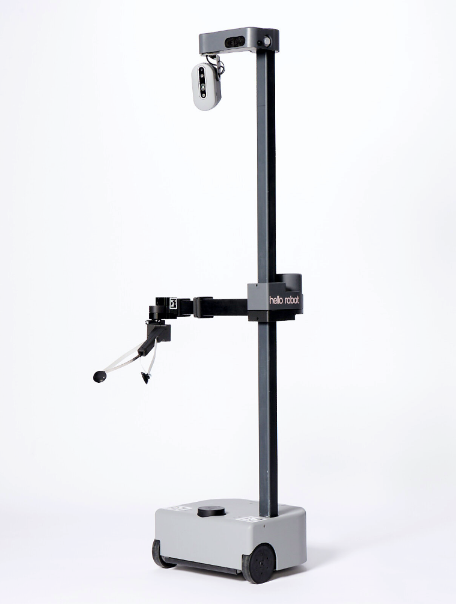
우리는 모든 로봇을 Hello Robot사의 Stretch [21]에서 구동한다. 이 로봇은 3자유도(DoF)의 정교한 손목, 손목이 장착되는 1자유도 신축식 암, 그리고 암이 장착되는 1자유도 리프트를 가지고 있다. 로봇의 베이스 또한 회전 및 측면 이동이 가능하여, 로봇의 말단 효과기(end-effector)에 완전한 6자유도 기능을 제공한다.
매 단계마다, 평행이동 모델은 그리퍼에 대한 을 예측하며, 이는 역기능학(inverse kinematics) 모델을 통해 로봇 관절의 움직임으로 변환된다. 이 모델은 자가 충돌 방지와 같은 단순한 목표는 고려하지만, 환경 충돌 방지와 같은 문제는 모델링하지 않는다.
로봇의 관측을 위해, 우리는 맞춤형 3D 프린팅 마운트를 사용하여 로봇 손목 상단에 장착된 표준 웹캠을 사용한다. 로봇이 캡처한 이미지는 네트워크를 통해 VINN 알고리즘을 실행하는 머신으로 스트리밍되며, 이 머신은 예측된 로봇 행동으로 응답한다.
-D 시연 데이터 수집 상세 정보
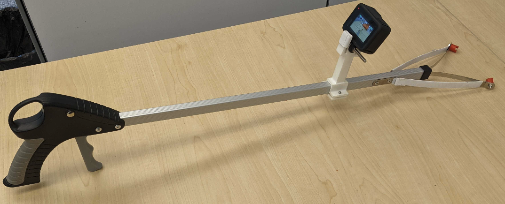
우리는 시연 데이터를 수집하기 위해 DemoAT [49] 프레임워크를 사용한다. 철물점이나 온라인에서 쉽게 구할 수 있는 단순한 리처 그래버 도구에 GoPro 카메라를 장착하여 관측 프레임을 캡처한다. 이것의 이미지는 그림 8에 나와 있다.
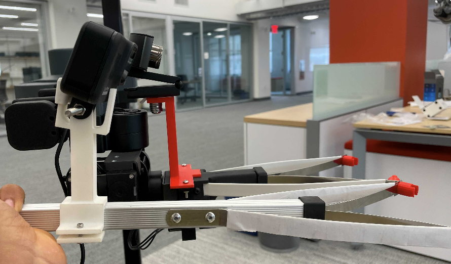
그림 9에서 볼 수 있듯이, 로봇을 쉽게 리셋할 수 있도록 로봇 그리퍼 끝의 패드를 단순한 3D 프린팅 놉(nub)으로 교체했으며, 리처 그래버 도구에도 동일하게 적용했다.
시각적 관측을 얻기 위해, 우리는 맞춤형 3D 프린팅 마운트를 사용하여 리처 그래버 도구 상단에 GoPro를 장착한다. 광각 왜곡을 제거하기 위해 후처리 과정에서 ffmpeg을 사용하여 GoPro 비디오를 선형화하고, 초당 1프레임의 속도로 프레임을 추출한다. 마지막으로, 추출된 프레임과 OpenSfM 라이브러리를 사용하여 프레임 간의 3D 움직임을 재구성한다. 연속된 프레임 간의 델타 위치 변화를 취하고, 이를 정규화하여 우리의 행동(action)을 얻는다.